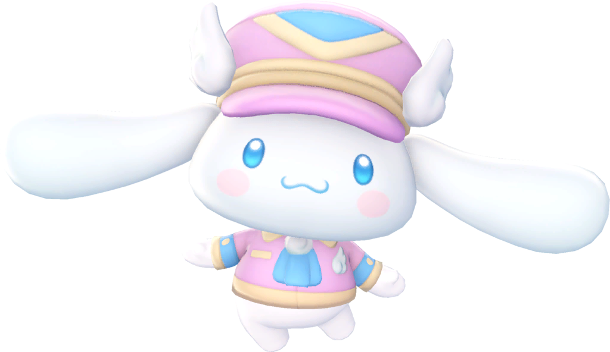
A cidade de Shinagawa, localizada em Tóquio, é conhecida não apenas por sua importância histórica e moderna na capital japonesa, mas também por sua ligação especial com o personagem Cinnamoroll, da Sanrio. Considerado o local de “nascimento” do personagem dentro da história oficial, Shinagawa possui vários pontos turísticos e referências dedicadas a ele, como ilustrações em espaços públicos, eventos temáticos e decorações espalhadas pela região. Essas homenagens atraem fãs da Sanrio e turistas que visitam a cidade em busca de fotos, produtos exclusivos e experiências relacionadas ao adorável cachorrinho de orelhas longas, tornando Shinagawa um destino interessante para quem aprecia a cultura pop japonesa e os personagens kawaii.
Podemos ver o cinnamoroll na vitrine do Shinakan PLAZA,
o centro de informações turísticas da cidade
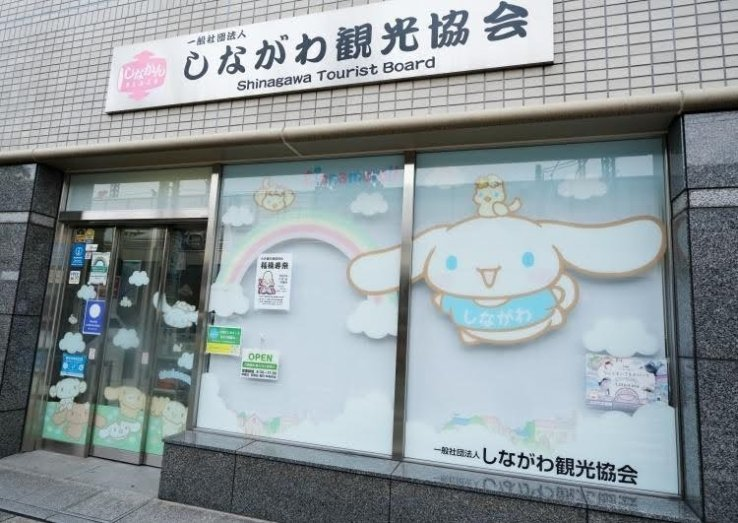
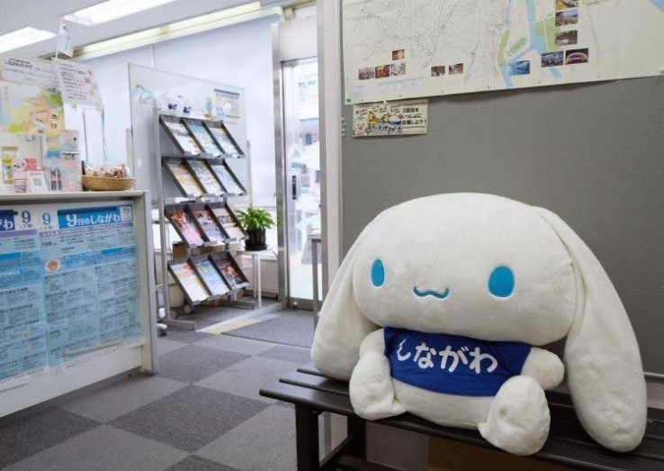
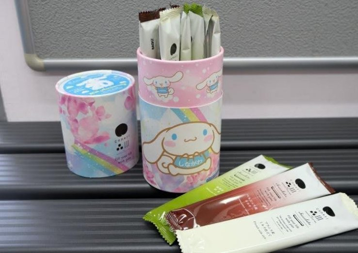
O Shinakan PLAZA é um centro versátil de informações turísticas gerenciado pela Associação de Turismo de Shinagawa. Adornado com encantadoras ilustrações de Cinnamoroll em suas janelas, o ambiente é convidativo e acessível, proporcionando um cenário ideal para os visitantes. A Shinakan PLAZA é um excelente recurso para coletar informações turísticas, oferecendo uma infinidade de mapas de guias de caminhada da cidade e folhetos informativos para enriquecer sua exploração da região.
O info&café SQUARE é um café temático encantador localizado em Shinagawa, dedicado ao adorável personagem Cinnamoroll. Este café oferece uma experiência única para os fãs, com um menu repleto de deliciosas opções inspiradas no personagem, como bolos, bebidas e sobremesas decoradas com a imagem de Cinnamoroll. O ambiente é decorado com ilustrações e itens relacionados ao personagem, criando uma atmosfera acolhedora e divertida para os visitantes. Além de desfrutar de deliciosas iguarias, os clientes também podem adquirir produtos exclusivos do Cinnamoroll, tornando o info&café SQUARE um destino imperdível para os fãs do personagem e para aqueles que desejam experimentar a cultura pop japonesa em um ambiente temático.
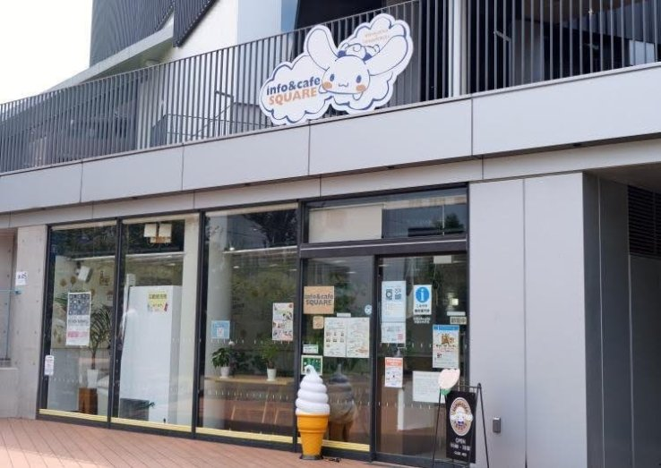
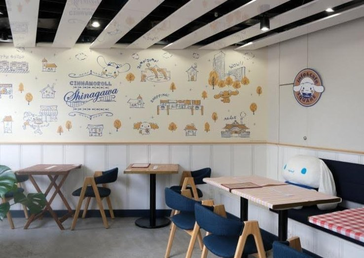
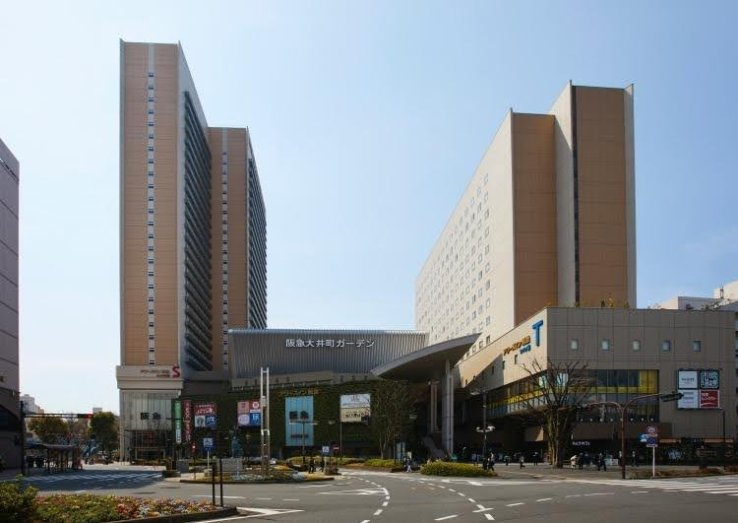
O Hotel Ours Inn Hankyu é um hotel temático encantador localizado em Shinagawa, dedicado ao adorável personagem Cinnamoroll. Este hotel oferece uma experiência única para os fãs, com quartos decorados com o tema do personagem, proporcionando um ambiente acolhedor e divertido para os visitantes. Além de desfrutar de uma estadia confortável, os hóspedes também podem adquirir produtos exclusivos do Cinnamoroll, tornando o Hotel Ours Inn Hankyu um destino imperdível para os fãs do personagem e para aqueles que desejam experimentar a cultura pop japonesa em um ambiente temático.
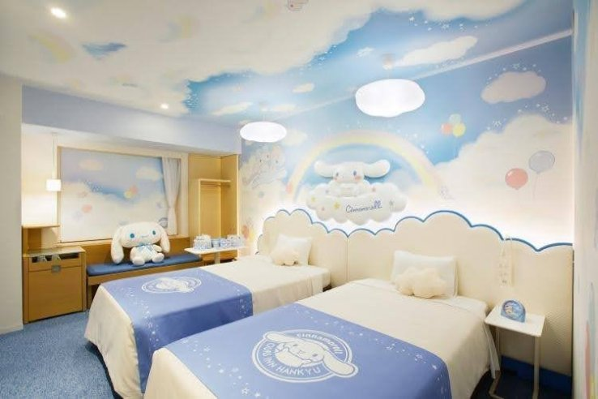
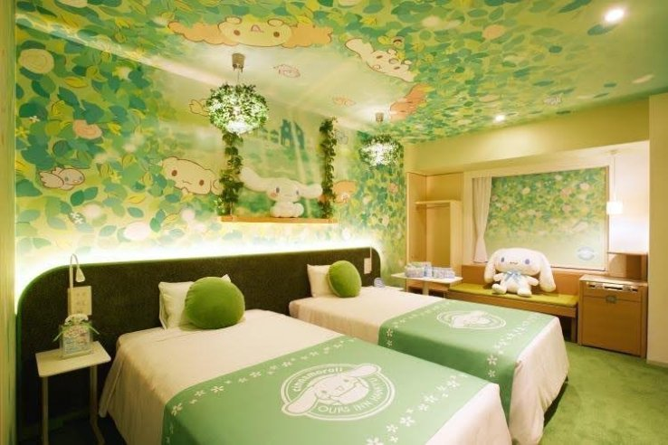
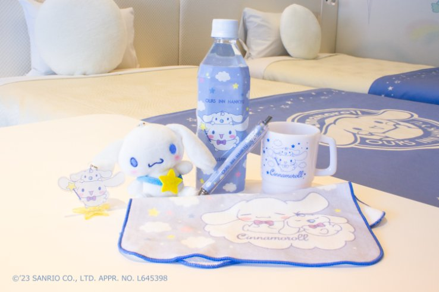
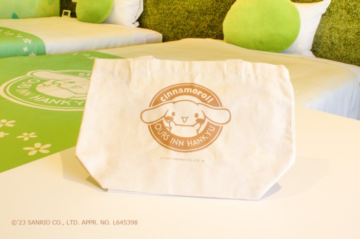
Em shinagawa, tem bueiros temáticos sobre o personagem
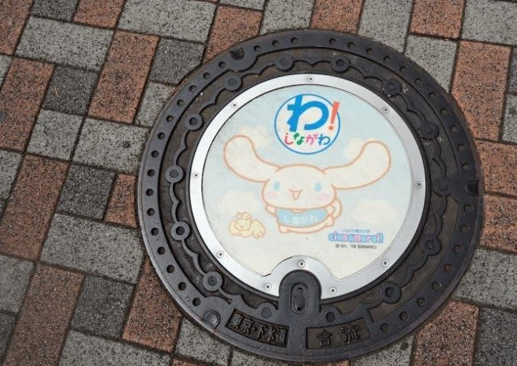
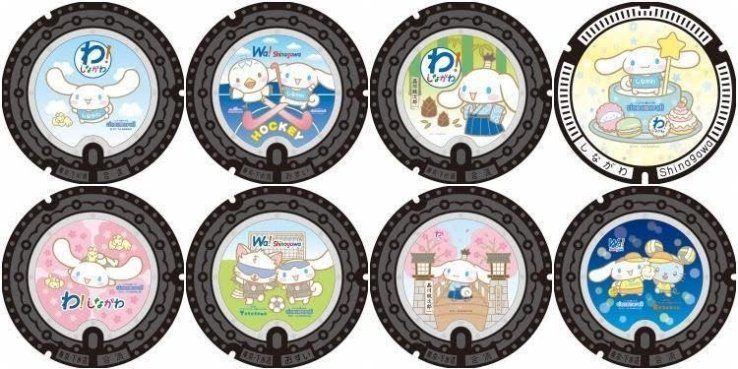
Na prefeitura de shinagawa, tem várias referências ao personagem, como paineis e papeis de parede tematicos do personagem
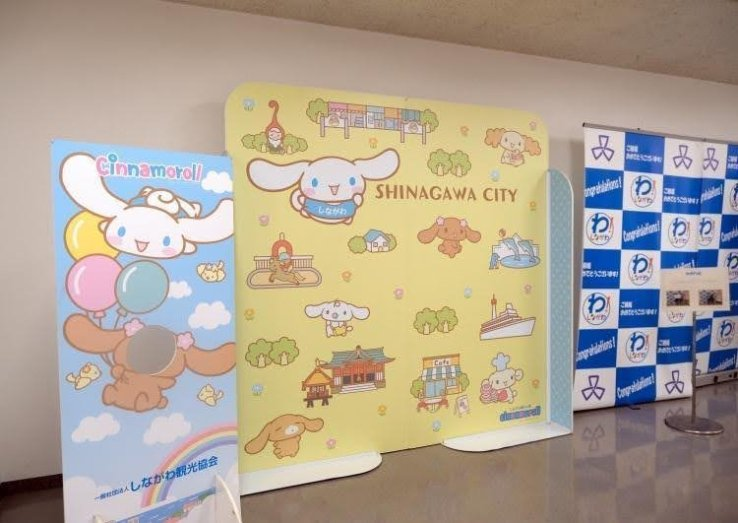
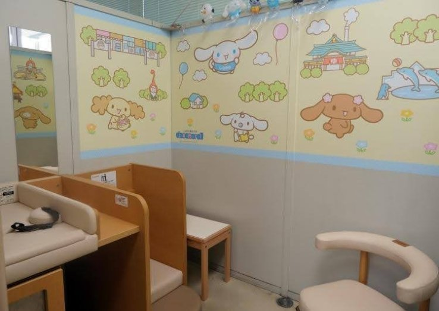
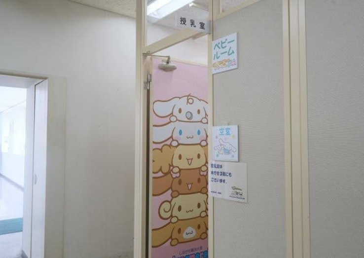
Registros de nascimentos dos bebês são temáticos com o personagem
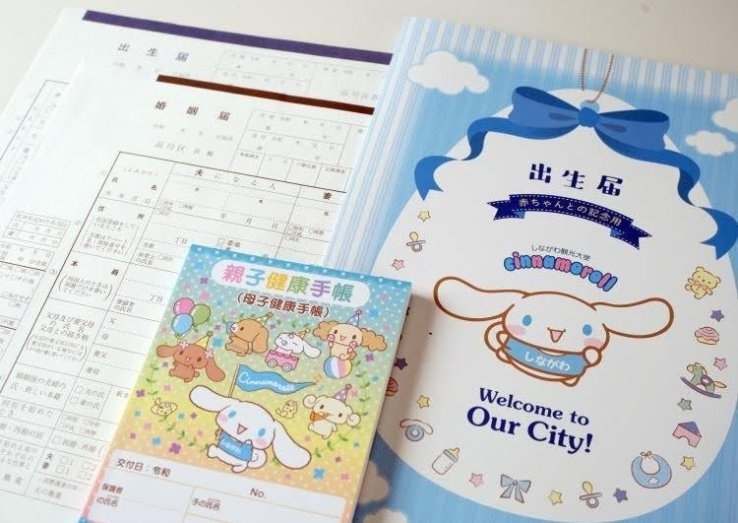
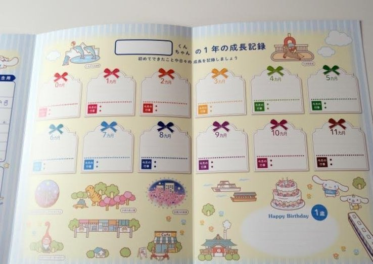